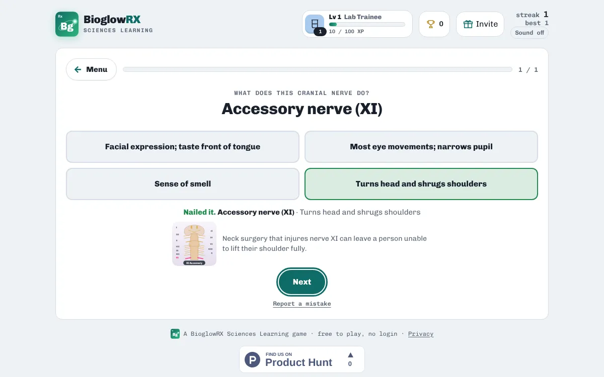

Anatomy & Physiology · free · no login
Cranial nerves quiz

There are 12 pairs of cranial nerves, numbered I to XII from front to back of the brain. You need to know each one's name, number and job, and whether it carries sensation, movement or both.

This quiz is part of Neuron Relay, our nervous-system game. Read the study notes, quiz yourself on what each nerve does, then match each nerve to its job in Match Pairs. The full game also covers neurons, synapses, the spinal cord and the brain.
A taste of what's inside
| Cranial nerve | What it does |
|---|---|
| Olfactory nerve (I) | Sense of smell |
| Optic nerve (II) | Carries vision from the retina |
| Oculomotor nerve (III) | Most eye movements; narrows pupil |
| Trochlear nerve (IV) | Superior oblique: eye down and out |
| Trigeminal nerve (V) | Feeling in the face; chewing |
| Abducens nerve (VI) | Lateral rectus: eye looks outward |
| Facial nerve (VII) | Facial expression; taste front of tongue |
| Vestibulocochlear nerve (VIII) | Carries hearing and balance signals |
| Glossopharyngeal nerve (IX) | Taste back of tongue; swallowing |
| Vagus nerve (X) | Parasympathetic to heart, lungs and gut |
| Accessory nerve (XI) | Turns head and shrugs shoulders |
| Hypoglossal nerve (XII) | Moves the tongue |
Ways to practise
- Study notes · Read the key ideas first: everything the games ask is in here.
- Explore the nervous system · Neurons, glia, signals, cord, brain and cranial nerves, one card each.
- What does this? · Read the job, pick the part.
- Cranial nerve check · Name the nerve, pick what it does.
- Which group? · Neuron part, glia and myelin, signal, cord, brain or cranial nerve?
- Put it in order · Action potential, synapse, reflex arc, CSF flow and the cranial nerves I–XII.
- Match Pairs · Pair each part with its job.
- Cranial nerve pairs · Match the 12 cranial nerves with their jobs.
- Neuro clinic · Real patients: which part of the nervous system is involved?
How to study with it
- Read the Study notes on cranial nerves first.
- Play Cranial nerve check: you see the job and pick the nerve.
- Then play Cranial nerve pairs to lock in all 12.
Questions
Does it cover the whole nervous system?
Yes. Neuron Relay has 49 cards on neurons, glial cells, nerve signals, the spinal cord, the brain and all 12 cranial nerves.
Is it free?
Yes. Everything is free, with no ads and nothing to buy.
Do I need an account?
No. There is no login. Your scores, streaks and certificates are saved on your device.
Does it work on a phone?
Yes. It works in any modern browser on phones, tablets, Chromebooks and computers.
More free practice
 Anatomy & PhysiologyBones of the skeleton quizName and place 34 bones, with a skeleton diagramPlay free
Anatomy & PhysiologyBones of the skeleton quizName and place 34 bones, with a skeleton diagramPlay free  Anatomy & PhysiologyBlood flow through the heartChambers, valves and vessels in the right orderPlay free
Anatomy & PhysiologyBlood flow through the heartChambers, valves and vessels in the right orderPlay free  Anatomy & PhysiologyABG practice: blood gas casesRead pH, CO₂ and bicarbonate in patient casesPlay free
Anatomy & PhysiologyABG practice: blood gas casesRead pH, CO₂ and bicarbonate in patient casesPlay free BioglowRX Sciences Learning turns university science textbooks into free games, chapter by chapter: chemistry, anatomy & physiology, pharmacology, nutrition, and health & wellness. See all subjects.